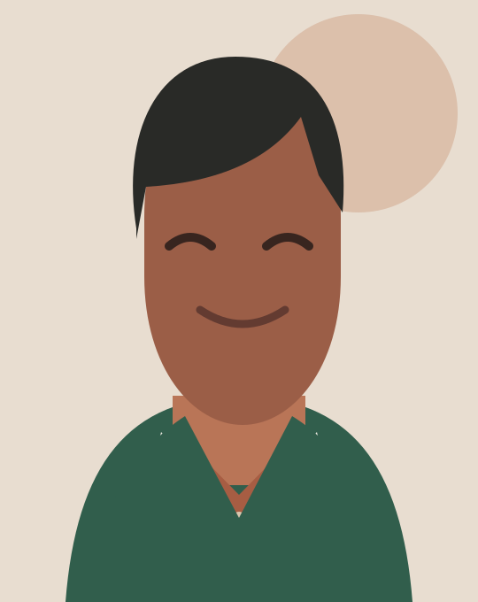

EDITOR · CONTENT DESIGN · JAKARTA, INDONESIA
Alex Morgan
I edit onboarding guides, product instructions, and interview copy in English and Bahasa Indonesia.

BACKGROUND · FICTIONAL SAMPLE
Study and selected work, in brief.
Ruang Belajar
Editing workshop sign-up instructions; testing two Indonesian versions of the first steps.
Campus Voices
Interview editing and proofreading for a student publication.
Communication Studies
Example University · Jakarta.
NOTES · EXAMPLE TOPICS
Short pieces this portfolio could link to.
PROJECTS · SAMPLE WORK
Selected projects
Fictional examples. Each card says what was edited and who needed it.
ONBOARDING GUIDE · SAMPLE
First day at Ruang Belajar
Rewrote a volunteer sign-up guide around the questions people ask before their first workshop.
RUANG BELAJAR / SAMPLE
STARTHERE.FIRST WORKSHOP GUIDERB-01
INTERVIEW SERIES · SAMPLE
Campus voices
Edited short interviews about the first month on campus, keeping each speaker’s wording intact.
CAMPUS
voices
voices
INTERVIEW SERIES / SAMPLE
SELF-INITIATED · SAMPLE
Street-side notes
A short field-note format for recording shop signs, directions, and words that change across neighborhoods.
FIELD NOTES
NO. 08Read the
street signs.JAKARTA / SAMPLE
NO. 08Read the
street signs.JAKARTA / SAMPLE
About
I study communication and spend a lot of time looking at forms, signs, and help pages from the reader’s side. When a sentence hides the next action, I try to name the action first.
This fictional portfolio focuses on editorial work for community learning and small digital products.
Contact
Send the page, the audience, and the task that keeps getting stuck. We can start there.
alex.morgan@example.com ↗